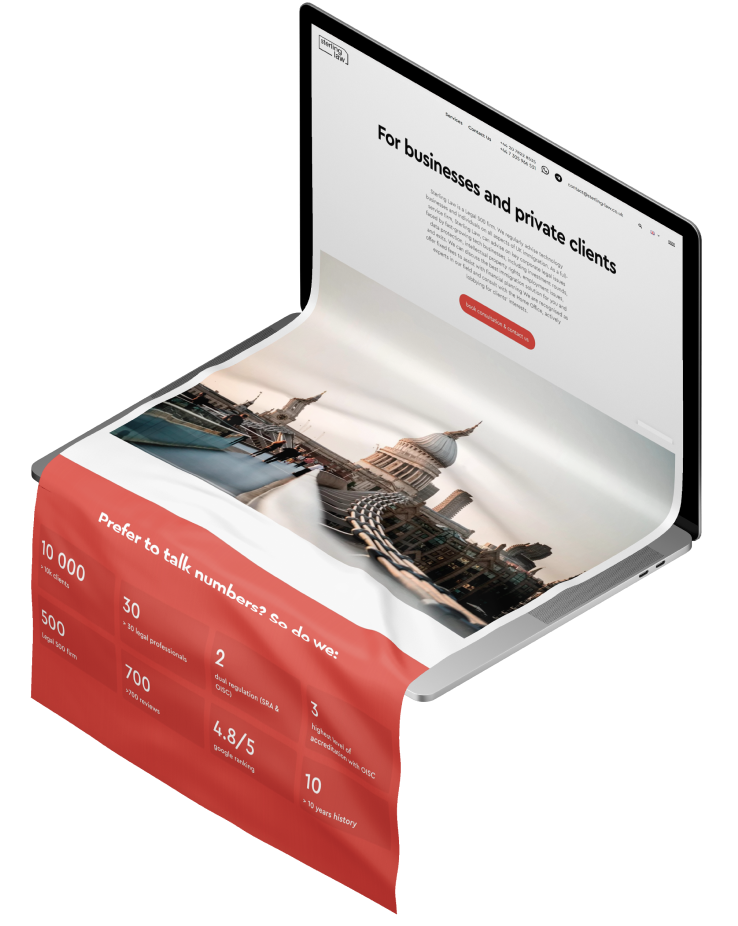

Website Development for law company
STERLING LAWYERS LTD is a law firm based in the UK. The team advises small, medium businesses and private person on business immigration to the UK.
Task from the client:
We needed to create a modern corporate website, which is understandable and user-friendly. We used Wordpress, because the old site was created on this CMS.
Website:
https://sterling-law.co.uk
Frontend
JAVASCRIPT
CSS3
HTML5
Backend
WordPress
SQL
PHP
Integrations
Company internal services
#Stages_of_work
Competitor analysis
Target audience analysis
Sitemap development
Development of technical specifications. Preparation for SEO promotion
STAGE 1
Selection of references
Prototyping
Design creation
Creating an adaptive version
STAGE 2
HTML /CSS site layout
Function programming
Installation and configuration of modules
Page load optimization
Website testing
STAGE 3
Basic content filling
Delivery of the project to the client
Site publishing
STAGE 4
#Website_creation
The new website design strengthens the company's image as a reliable and open partner.
On the main page, we placed information about the company, the main achievements of the company, a bright accent button with a call to action for the user. All this significantly increases the conversion of the site.
Main page
internal page
All internal pages are created in a single concept.
Colors
# F6F6F6
# CC4A3D
# 000000
# D8D8D8
# E8E8E8